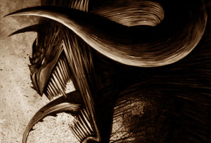

Forums galactiques > Assemblée Galactique : diplomatie officielle > mercenaire
Pages : 1 2
| narutos Respect diplomatique : -14  10/10 ETU 20:28 | Score : 3 Détails Narutos entra dans la grande salle et d’une voie grave et forte, ouvrit la parole.
Commandants commandantes, Je me présente ,je suis narutos chef des armées de l’empire de Konoha.,j ai l intention de devenir mercenaire et de vous en faire profiter. Avant de me critiquer je souhaiterais vous dire que c’est pour moi la meilleur solution de progresser et de me faire connaître . Bon passons au chose sérieuse voici mes tarifs : -Pour la prise des planètes je prend 1/3 du totale . -Je peux hyper atomiser tous les systèmes pour la maudite somme de 3 millions de leems. -Je peux aussi ioniser pour 350 milles leems par tir ionique. Ce topique s’adresse en t’autre au jeunes commandants en difficultés mais aussi à tous les autres . | ||
| Azazel Respect diplomatique : 20  10/10 ETU 20:32 | Score : 1 Détails hum...
Je pense que vous n'allez pas faire long feu dans cette galaxie... | ||
| narutos Respect diplomatique : -14 10/10 ETU 20:35 | Score : 0 Détails donnez moi une meilleur solution pour progresser sans tuer de jeunes commandants et sans s'engager dans une guerre perdus d avance.
| ||
| Mansfeld Respect diplomatique : 4380  10/10 ETU 20:36 | Score : 0 Détails Weiss observa le commandant, et répondit..
Commandant, Le mercenariat semble être à la mode en ce moment, mais je doute cependant qu'il soit prudent et porteur de se révéler ainsi devant toute l'assemblée... ... la salle des plaintes devrait vous suffire pour "chasser" le client... Weiss se rassit, et prit note des coordonnées du commandant. HRP : Voter "hors sujet" alors que c'est narutos qui le lance, c'est quand même fort... [EDIT]même si son annonce est commerciale, elle peut engendrer du RP sur le sujet du mercenariat | ||
| Lizaka Respect diplomatique : 2723  10/10 ETU 20:37 | Score : 1 Détails Pour toutes les affaires commerciales, vous trouverez plus facilement des clients au Marché.
| ||
| Vladimir Respect diplomatique : 141 10/10 ETU 20:40 | Score : 0 Détails Le meilleur moyen de ne pas se retrouver dans une guerre perdue d'avance, n'est-il pas déjà de ne pas être "mercenaire" ? Pensez-vous que le fait de remplir un simple contrat peut protéger des retours de flammes ?
Si, malgré ces objections, vous persistiez, je me permets de garder votre carte de visite en mémoire. On ne sait jamais ... Même si vos tarifs sont ... mmmm ... élevés, non ? | ||
| narutos Respect diplomatique : -14 10/10 ETU 20:41 | Score : 3 Détails c' est peu être vrais mais j ai pense que le contexte etait plus approprié ici lizaka.
Et ouis mes tarifs sont sans doute elevés mais c'est le debut donc jai mis ces tarifs mais ils vont sans doute evoluer. | ||
| Mansfeld Respect diplomatique : 4380 10/10 ETU 20:47 | Score : 0 Détails Weiss répondit, volubile...
Cela fait partie des risques du métier je suppose... et puis, un mercenaire habile peut renégocier son contrat en fonction des risques encourus. Je suggère au commandant Narutos de réfléchir à l'opportunité de créer une compagnie de mercenaires, sous la forme d'une coalition galactique, par exemple. De même, un mercenaire gagnant en publicité doit se définir toute une série de règles à faire connaître aux clients. Cela peut le prémunir de bien des dangers... En tout cas, bonne chance dans votre entreprise, commandant Narutos ! | ||
| narutos Respect diplomatique : -14 10/10 ETU 20:48 | Score : 0 Détails c'est un de mes projet mais je veux voir ce que ça donne avant toute chose.
| ||
| Lokki Respect diplomatique : 281  10/10 ETU 21:00 | Score : 3 Détails "-Je peux hyper atomiser tous les systèmes pour la maudite somme de 3 millions de leems."
Lokki rit de bon coeur: Modique mon cher, modique... Plus sérieusement, je crois que vous ne ferez pas de vieux os si vous vous proclamez mercenaire, surtout si votre but est de progresser en tuant des petits commandants. En effet, la demande n'est pas très forte dans le secteur des "jeunes". Les commandants actuels préfèrent faire éliminer leurs ennemis diplomatiques et militaires (déjà très puissants donc), et n'ont que faire de jeunes recrues dépourvues d'influence diplomatique (mis à part dans le cas d'une réincarnation, relativement rare). Et en plus, l'idée de piller les cadavres de défunts "enfants" (militairement parlant) me plaît moyennement, d'un point de vue personnel...faites donc attention à la voie dans laquelle vous vous engagez. | ||
| Lewllyn Respect diplomatique : 192  10/10 ETU 21:04 | Score : 2 Détails "Rooooooooooo Lokki, laisses donc ce pauvre fo... heu humble personne faire son commerce.
Après tout, c'est à ses risques et périls. Mais attention, qu'aucune affaire concernant un de mes protégés ne remonte jsuqu'à mes oreilles. La réponse pourrait être dure. Je sais me montrer persuasif quand il le faut. A bon entendeur, salut!" | ||
| Lokki Respect diplomatique : 281 10/10 ETU 21:07 | Score : 0 Détails Hey Lewllyn ne crois pas que je sois devenu aigri!^^
Justement je l'avertis de ce qui pourrait lui arriver...je ne prendrai aucune mesure contre lui tant qu'aucune de ses exactions ne remontera à mes oreilles. | ||
| Lewllyn Respect diplomatique : 192 10/10 ETU 21:09 | Score : 0 Détails "Ce qui soit dit en passant ne devrait surmeent pas tardé.
Enfin on verra bien. Je vous laisses ches camarades et fo... heu huble mercenaires, il faut que j'ailles rédiger une constitution. A bientôt!" Et le nain se dirigea vers son vaisseau, qui s'envolla pour la capitale de l'Empire Hogwarien sitôt l'Empereur à bord. | ||
| Azazel Respect diplomatique : 20 11/10 ETU 15:39 | Score : 0 Détails "donnez moi une meilleur solution pour progresser sans tuer de jeunes commandants et sans s'engager dans une guerre perdus d avance."
Commandant Naruto Je pense que vous ne reflechissez pas. On est pas obligé de tuer un commandant pour progresser. Loin de ça. Et bien pour progrsser, et si vous etre assez jeune aller dans une coalition on vous aidera un peu et construisez des mines je pense que ce n'est pas compliqué!!! | ||
| Kanaxai Respect diplomatique : 215  11/10 ETU 15:51 | Score : 2 Détails Azazel a raison, tuons-en plusieurs !
La phrase avait jailli de la bouche de Kanaxai sans qu'il ne s'en rendit vraiment compte, il avait bien trop l'habitude de tenir de tels propos dans son centre militaire. Oups... KXI | ||
| Mansfeld Respect diplomatique : 4380 11/10 ETU 15:53 | Score : 1 Détails Weiss sourit... il lut le profil holographique de Kanaxai...
"pacifique" Il poussa un soupir... et se rassit... | ||
| narutos Respect diplomatique : -14 11/10 ETU 16:24 | Score : 1 Détails Pour vous repondre Azazel je suis déja dans une coalition et toutes mes mines et centrales sont construites.
| ||
| Azazel Respect diplomatique : 20 11/10 ETU 17:02 | Score : 0 Détails
Et bien j'aimerai pas etre dans votre coalition parce que vu vos projet ça me ferai peur. | ||
| thegrumo Respect diplomatique : -93  11/10 ETU 18:04 | Score : -7 Détails ou est le probléme?
c'est le sien apprais tous... | ||
| narutos Respect diplomatique : -14 11/10 ETU 18:47 | Score : -2 Détails merci thegrumo de ton soutiens
|
Pages : 1 2
Forums galactiques > Assemblée Galactique : diplomatie officielle > mercenaire